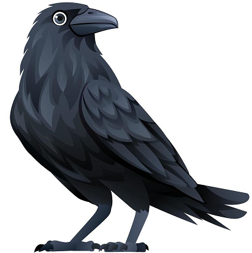

Estudante Ensino Médio Senac.
Site da Filtn, site que provem ajuda a resolver um problema encontrado nas indústrias quanto a falta de ineficiência em certos casos.
Site que traz uma solução criativa e tecnológica para certas adversidades encontradas na cidade Santa Cruz do Sul, tendo como objeto cuidar da área da saúde: para conscientizarmos as pessoas sobre o mosquito Aedes Aegypt (transmissor da dengue, da Chikungunya e da Zika) e maneiras de prevenção das doenças transmitidas por ele.
Atividade de criar uma programação orientada a objetos (POO) onde você pode criar um animal.
Exemplos do Portugol Webstudio - um site de tutoriais para aprendizado em programação - para JavaScript passados para um site.
Um site de indicações sobre o Swift - uma linguagem de programação mobile.
Uma lista de palavras em inglês, tanto relacionado a técnico quanto a palavras do cotidiano, com suas respectivas explicações.
Uma calculadora digital que realiza calculos de módulo, como neste exemplo, a força de velocidade
Estudante do Ensino Médio Senac RS.
Músico e desenvolvedor iniciante.
iagolangone07@gmail.com